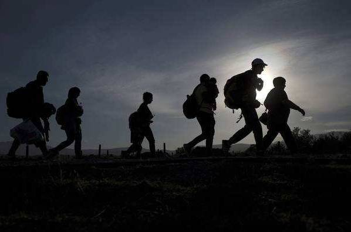

收录于合集
摘要
目前， 难民问题在世界范围内长久得不到解决， 主要是因为其面临着人道主义和国家安全的两难困境。从国际关系理论中的现实主义观点来看， 维护国家安全是国家的首要任务， 这就要求国家必须控制进入本国领土的人口； 而从理想主义观点来看，人的基本权利应该优于任何国家利益的政治考虑。这两种观点构成了难民问题研究和难民政策制定两个截然相反的理论基础。理清这个问题， 有助于我们观察各国难民接收政策的逻辑， 并对我国的难民政策制定有所借鉴。
关键词 难民； 理想主义； 现实主义； 难民政策
２ ０１６年６月， 联合国难民署（ ＵＮＨＣＲ） 发布《 ２ ０１５年全球难民趋 势》 的 报 告， 报 告 指 出， 由 于 部 分 国 家 和地区常年持续 动 荡 和 冲 突 加 剧， 近 年 来 国 际 难 民 形 势明显加剧。自２ ０１１ 年 到２ ０１４ 年 间， 全 球 范 围 内 能 够统计得到的流离失所 人 数 增 加 了４ １％， 超 过６ ０００ 万。这一数据已 经 达 到 了 二 战 后 的 最 高 点。截 至２ ０１５ 年底， 全球有６ ５３０万人被迫流离失所， 创下历史新高， 〔 １〕已经超过了英 国、 法 国、 意 大 利 国 家 的 人 口 总 数， 以 地球上７ ３．４９亿的人口作为衡量尺度， 意味着全球每１ １３人中， 就有１人 是 流 离 失 所 者、 寻 求 庇 护 者 或 者 难 民。难民危机引起 世 界 各 主 要 国 家 密 切 关 注， 也 引 发 了 全球范围内对处理难民问题和难民政策的讨论。

一、 难民定义及世界主要难民问题应对方式
1
难民的定义
目前， 对于难民的定义， 学界和政府机构通常采用联合国１ ９５１年７月签订于日内瓦的《 关于难民地位的公约》 对难民的定义，指“ 现居住在原籍国或惯常居住国之外的地方； 因种族、 宗教、 国籍、 隶属于某一特定社会集团或政见关系， 有确凿理由害怕遭到迫害； 不能或者因为惧怕迫 害 而 不 愿 接 受 原 居 留 国 的 保 护， 或 返 回到那里、 需要 寻 求 国 际 保 护 的 人。 ” 由 此 定 义 可 以 看出， 联合国的难民定义主要偏重于政治难民。很明显，仅着眼于政 治 难 民 的 定 义 十 分 局 限。因 此， 随 着 难 民数量的增大和流动加快， 难民的定义有了新的发展， 一些区域性 的 国 际 组 织 根 据 难 民 救 助 的 经 验 和 需 要 对“ 公约难民” 定义加以补充， 如 １ ９６９ 年《 非 统 组 织 关 于非洲难民问题特定方面的公 约》 和 １ ９８４ 年《 卡 塔 赫 纳宣言》 规定： “‘ 难民’ 一词也适用于凡由于外来侵略、 占领、 外国统治或 严 重 扰 乱 其 原 住 国 或 国 籍 所 属 国 的 一部分或全部领 土 上 的 公 共 秩 序 的 事 件， 而 被 迫 离 开 其常住地到其原住国家或国籍所属国以外的另一地去避难的人。 ”这等 于 在 难 民 定 义 中 添 加 了 冲 突 难 民 的 分类， 大大扩展了难民的范围。
随着世界部 分 地 区 冲 突 的 加 剧、 环 境 气 候 变 化 的影响、 经济发展不平衡问题的出现， 难民的种类更加多样化， 对难民定义的探讨就更加多元。 ２ ０世纪７ ０年代开始， 环境难民 的 概 念 逐 渐 被 联 合 国 环 保 署 和 联 合 国难民署关注。１ ９８５年， 卡布莱布? 菲尔斯（ Ｋ ｉｂｒｅａｂＧ．Ｆ ｅｒｒｉｓ）将环境 难 民 定 义 为：由 于 显 著 的 环 境 破 坏（ 天灾或者人祸） 有碍人类生存或（ 并） 严重影响生活品质，被迫暂时或永 远 搬 离 其 原 来 居 处 的 人。 〔 ３〕由 于 环 境 的构成要素的多 样 性， 环 境 难 民 的 概 念 还 衍 生 出 了 很 多相关概念， 生态难民、 气候难民、 海洋难民等， 环境难民成为学术界 十 分 关 心 的 话 题。此 外， 建 勋 还 提 出 了 经济难民的概 念。他 认 为， 经 济 难 民 主 要 是 指 近 年 来 受经济全球化的影响而出现的全球大规模的人口迁徙现象， 在这些人口中包括经济移民和经济难民， 其中劳工和贫困人口就 属 于 经 济 难 民。也 有 一 些 学 者 开 始 研究 难 民 与 移 民 的 区 别。 莉 迪 亚 ? 史 密 斯 （ Ｌ ｙ ｄ ｉａＳｍｉｔｈ） 指出了移 民、 难 民 和 申 请 避 难 者 几 个 定 义 的 区别。她指出， 移民主要是“ 长期或者短期迁往国外某一地区永久定居的人。 ” 这些人主要是为了寻求更好的生活— ——通常 被 称 为 经 济 移 民， 也 有 一 部 分 移 民 是 为 了家庭或者求 学。那 些 因 为 冲 突、 政 治 迫 害 等 而 迁 移 到其他地区或者国家的人口通常被称为难民。
２
导致难民出现的原因
对 于 产 生 难 民 的 原 因， 近 年 来 学 界 也 多 有 论 述。第一种是霸权负责论。这种观点把难民潮的爆发归因于发动战争 的 国 家， 尤 其 是 美 国。因 为 没 有 了 权 力 制约， 冷战后美国轻易发动战争， 导致出现大量难民。霸权国以是否符 合 自 己 的 国 家 利 益 来 实 施 对 外 政 策， 而不是考虑如何维护世界稳定。丹麦奥尔堡大学发展与国际关系研究 中 心 的 李 形、 彭 博 在 文 章 中 指 出： “ 美 国奉行的霸权主义是当今很多全球性问题的根源。尤其是在‘ ９?１ １’ 后， 美国展开反恐战争以来， 这些 政 策 给全球安全播下 了 有 毒 的 种 子， 这 就 包 括 目 前 的 难 民 潮问题。 ”
第二种是欧盟战略失策论。首先是在各种机制中欧盟很多成员国追随美国， 甚至是在利比亚、 叙利亚战争中充当急先锋， 试图推翻自己不喜欢的当权者， 结果城门失火， 殃及池鱼； 其次是盲目输出欧式的民主人权模式， 经济安全领域的问题泛政治化， 造成了中东国家水土不服， 强人 政 权 纷 纷 倒 台， 国 家 转 型 来 不 及 完 成，结果出现了权 力 真 空， 给 极 端 势 力 的 兴 起 和 肆 虐 提 供了机会。 何 志 鹏 指 出： “ 西 亚 北 非 各 国 家 出 现 问 题 之时， 它们不是采 取 协 商 和 沟 通 的 方 式， 而 是 直 接 插 手，……， 干预的结果不仅没有呈现想象的乌托邦， 甚至出现了比原初状况更加深重的灾难。 ” 再次是欧盟共同的难民政策不完善， 执行不力， 出现了集体行动逻辑的困境。
第三种是难民输出国负责论。欧盟是持有这种观点的典型代表， 认为缺乏民主、 法治， 还有贫穷， 才是欧洲难民 危 机 产 生 的 根 源。 乔 治 · 博 杰 斯 （ Ｇ ｅｏｒ ｇ ｅＪ．Ｂｏｒ ｊ ａｓ） 和杰夫·克里斯普（ Ｊ ｅ ｆｆＣｒｉｓ ｐ） 在《 贫穷、 国际移民和避难》 一书中论述了贫穷、 避难和国际移民之间的关系， 指出贫 穷 是 产 生 国 际 难 民 的 首 要 因 素。 然 而，民主、 法治缺乏， 还 有 贫 穷 因 素， 在 相 当 长 的 时 间 内 是个常量， 而不 是 变 量。众 多 的 难 民 输 出 国， 像 叙 利 亚、利比亚、 伊拉克、 前 南 斯 拉 夫 境 内 的 国 家， 也 曾 有 过 长期稳定、 百姓安居乐业的日子， 但如今却成为难民的输出国。
还有一些其他的观点， 如建勋认为， 目前非洲大陆难民最多， 因为其常年的自然灾害和政府不作为， 同时宗教和民族派 别 冲 突 严 重。 英 国 亚 历 山 大· 卡 塞 拉（ Ａ ｌｅｘａｎｄｅｒＣａｓｅｌａ） 认为， 难民之所以成为普遍现象， 主要是全球化带来的影响， 如运输条件的便利、 通讯手段更加先进等， 在２ ０ 世 纪８ ０ 年 代 的 几 次 影 响 深 远 的 经济危机以及部 分 地 区 长 期 的 武 装 冲 突 的 影 响 下， 便 出现了人口移动的全球化。 澳大利亚斯蒂芬·卡斯尔斯（ Ｓ ｔｅ ｐ ｈｅｎＣａｓｓｅｌｓ） 则 在《 亚 太 地 区 新 移 民： 促 进 社 会和政治变化的一种力量》 一文中认为， 难民状况极具复杂性， 政治、 经济、 环境、 民族、 宗教差异等相互作用， 这也妨碍了难民问题的解决。
３
处理难民问题的主要方式
目前， 各 国 处 理 难 民 问 题 主 要 有 三 种 方 式： 遣 返、救济和重新 安 置。其 中， “ 遣 返” 是 最 简 单 而 传 统 的 方式。很多国家会通过设置“ 安全国” 等方式直接将申请避难者遣返 回 本 国。但 是 出 于 人 道 主 义 考 量， 联 合 国难民公约规定， 如 果 难 民 在 其 原 居 住 国 有 可 能 会 受 到迫害， 则申请避难国不得将难民强行遣返。因此， 这种方式目前很 难 实 行。对 于 难 民 群 体 来 说， 对 于 改 善 他们境况最有利的方式是“ 重新安置” 。通过难民接收程序被接收国重新安置在本国生活， 获得新的安身之地。但这种方式却会对安置国产生不小的社会负担和经济负担， 安置国政 府 必 须 通 过 国 家 财 政 支 出 为 难 民 提 供衣食住行、 医 疗、 教 育、 就 业 培 训 等 一 系 列 支 持。由 于语言、 文化等各方面差异， 难民完全融入安置国是一个漫长的过程， 很 有 可 能 长 期 影 响 安 置 国 家 的 社 会 稳 定和民族关系。例如， 叙利亚难民危机爆发初期， 德国秉持人道主义原 则， 一 直 实 施 着 较 为 宽 松 的 难 民 接 收 政策， 并因此赢 得 了 一 定 的 国 际 声 誉。但 是 大 量 接 收 难民的负面后果很快显现出来： 社会矛盾急剧增加， 社会治安恶化， 反难民呼声不断， 民粹主义政党德国选择党（ ＡＦＤ， ＡｌｔｅｒｎａｔｉｖｅｆｕｒＤｅｕｔｓｃｈｌａｎｄ） 兴 起， 并 以 反 难 民和移民为口号， 威胁执 政 党 地 位。２ ０１６ 年９ 月２０ 日，德国总理默克尔领导的基督教民主联盟在德国首都柏林举行的州议 会 选 举 中 遭 遇 重 挫， 而 选 择 党 则 首 次 进入柏林州议 会。因 此， 目 前 绝 大 多 数 国 家 都 避 免 采 用重新安置的 办 法， 而 是 更 多 采 用 提 供 救 济 的 手 段。通过提供资金、 衣 物、 食 品、 药 品 等 给 难 民 以 生 活 上 的 照顾。国际上各国 往 往 希 望 别 的 国 家 安 置 难 民， 自 己 只提供救济， 这样既表达了自己的人道主义关切之情， 又不会使自己 背 上 长 期 的 包 袱。例 如， 日 本 一 直 是 联 合国难民救济计 划 的 最 大 资 金 捐 助 国， 但 它 的 一 贯 政 策是不接收难民。但这种办法仅仅能暂时缓解难民的生活困境， 无法根本解决难民问题。
不同于在自愿基础上产生的移民现象， 难民（ 包括寻求避难者） 问题的出现， 主要源于国际人权意识的兴起和公众对国 家 与 公 民 关 系 的 自 由 共 和 主 义 的 理 解。自由共和主义， 形成于２ ００６年， 代表作为《 自由共和主义新篇》 。该主义以研究资本主义、 社会主义和自由主义的理论为基 础， 形 成 了 以 人 民 民 主、 自 由 权 利、 公 益社会、 经济开放、 政治透明和自由共和主义执政理论为中心， 崇尚自由 民 主 和 谐， 政 治 执 政 权 与 监 督 权 分 立，提倡三权两政 分 立 的 思 想， 使 社 会 成 为 公 益 的 自 由 民主社会。不容 否 认 的 是， “ 国 家” 是 难 民 问 题 的 起 因 和解决方案。一方面， 难民被定义为基本人权受到侵犯，并且失去了原属国保护的个人； 另一方面， 这种原属国保护的丧 失 意 味 着 这 一 群 体 需 要 寻 求 国 际 社 会 的 救助， 即其他国家通过为难民提供庇护， 使难民群体基本权利获得保 障。然 而， 由 于 国 家 有 承 认 或 者 拒 绝 非 国民进入和停留在其领土上的权利， 因此， 采用宽松的还是严苛的难民 政 策 关 系 到 国 家 主 权 的 核 心 问 题： 国 家安全问题。
目前， 各国的 难 民 政 策 普 遍 置 于 两 个 相 互 冲 突 的范式之间： 一方面， 对基于国际人权的人道主义原则的承诺— ——这 反 映 在 哲 学 领 域 即 为 理 想 主 义 思 想， 人 权的 普 遍 性， 适 用 于 每 一 个 体， 不 论 他 们 来 自 哪 一 国家— ——要求 各 国 尽 可 能 多 地 接 收 难 民， 维 护 难 民 的 生存和发展以及接受救助的权利； 另一方面， 出于现实主义考量的维护国家内部安全的当务之急— ——国家主权的特殊性， 支持 国 家 控 制 外 国 人 在 其 领 土 上 进 入 和 停留的权利— ——则要求各国尽可能控制进入本口的外国人口， 以维护本国的国家安全。因此， 各国的难民政策普遍试图在这两者之间求得平衡。

二、 从国际关系理论中的两种范式视角看难民问题
如前所述， 难 民 政 策 表 现 为 人 权 原 则 与 国 家 主 权原则之间的 内 在 矛 盾。因 此， 难 民 和 难 民 保 护 的 概 念存在争议， 其观 念 和 定 义 往 往 在 更 多 遵 循 集 权 主 义 还是更多人道 主 义 之 间 徘 徊。这 种 对 立， 源 于 国 际 关 系理论中两个主 要 的 经 典 理 论 传 统， 即 现 实 主 义 和 理 想主义。虽然在国 际 关 系 理 论 中， 这 两 种 范 式 各 自 产 生了不同的方法， 但 他 们 的 哲 学 基 础 可 以 在 一 组 核 心 假设中得到确认， 就 它 们 的 人 权 与 国 家 主 权 的 关 系 概 念而言， 这些假 设 本 质 上 是 相 反 的。从 难 民 的 某 些 规 范取向来看， 现实 主 义 和 理 想 主 义 的 观 点 之 间 存 在 着 不同的认知和规范意义的例证（ 通常是隐含的） 。对这些不同规范取向的识别， 有助于更好地分析难民问题， 并且在政策变迁的实证研究中提供有用的分析范畴和更有效的难民问题的解决方案。
1
现实主义观点： 国家的主要职责
根据现实主 义 理 论， 国 际 体 系 中 的 关 键 因 素 是 主权国家。主权体现在内在和外在两个范畴。其中内在范畴是指在国 内 国 家 的 最 高 权 力， 即 在 特 定 区 域 内 制定和执行法律的权力。这一权威得以建立的基础在于人民和国家之 间 的 社 会 契 约 理 念： 国 家 能 够 保 证 人 民的安全。因此， 维 护 国 家 的 内 部 安 全 是 国 家 的 首 要 任务。国家领导人 被 视 为 完 全 理 性 的 人， 其 行 为 是 为 了保护“ 国家利益” 。 由此衍生出一种观点， 即在任何时期， 人权和其他 价 值 观 都 应 该 服 从 于 维 护 内 部 秩 序 乃至国家安全。外 在 范 畴 则 是 指 在 国 际 领 域， 一 个 国 家对其领土有绝 对 的 独 占 控 制 权， 任 何 外 部 权 力 都 不 能干涉国家的内部事务。而国际体系的特点是无政府状态。现实主义认为， 当丧失公共权力时， 国际体系不受规范或共同原则的控制， 同样的， 每一个国家都对其治下的人口和领土乃至社会价值享有完全的自治权。
这种现实主义理论下的无政府主义思想产生了现实主义另外的两个关键概念： 理性与自助。首先， 理性的概念是指在 国 际 体 系 中， 国 家 的 功 利 行 为 被 看 作 是权力最大的 崇 拜 者。在 无 政 府 状 态 下， 他 们 的 关 系 被看作是一个完 全 分 配 的 零 和 博 弈， 即 一 国 得 到 的 利 益等于另一国损失的利益。因此， 国家在竞争逻辑下， 根据人口与地域规模、 资源禀赋、 经济能力、 军事实力、 政治稳定、 国家竞争力等情况采取行动， 并且寻求权力最大化。这种竞争逻辑与根据共同规范或原则达成的。
这种现实主义理论下的无政府主义思想产生了现实主义另外的两个关键概念： 理性与自助。首先， 理性的概念是指在 国 际 体 系 中， 国 家 的 功 利 行 为 被 看 作 是权力最大的 崇 拜 者。在 无 政 府 状 态 下， 他 们 的 关 系 被看作是一个完 全 分 配 的 零 和 博 弈， 即 一 国 得 到 的 利 益等于另一国损失的利益。因此， 国家在竞争逻辑下， 根据人口与地域规模、 资源禀赋、 经济能力、 军事实力、 政治稳定、 国家竞争力等情况采取行动， 并且寻求权力最大化。这种竞争逻辑与根据共同规范或原则达成的协议是矛盾的， 除 对 其 他 国 家 的 内 部 事 务 不 干 涉 规 则外。因此， 当现 实 主 义 者 在 外 交 政 策 中 考 虑 到 理 念 与价值的追求时， 这被解释为权力政治的一部分； “ 普遍”规范的概念仅仅是对适用于霸权国家的规范的一种反思。并且， 外交 政 策 中 的 人 权 追 求 被 看 作 是 一 个 国 家在另一个国家的道德原则（ 伦理） 的实施。
无政府状态的第二个相互关联的概念是自助。在国际关系中， 国 家 只 能 通 过 自 助 实 现 自 己 的 安 全。这就意味着每一 个 国 家 都 有 追 求 其 外 交 政 策 的 权 利， 因为其认为这 样 做 是 适 合 的。因 而， 现 实 主 义 理 论 主 要关注的是“ 高级政治” 问题， 例如战争、 和平。经济或其他目标服从于整体的国家生存利益， 而观念、 规范或价值观对国际 关 系 不 会 产 生 影 响。从 这 个 角 度 来 看， 难民问题依赖于国家主权， 包括对其领土和人口的控制。对于现实主义 者 来 说， 如 果 一 个 国 家 不 能 理 性 地 控 制移民人口的流 动， 移 居 外 国 和 移 民 入 境 都 将 成 为 一 个安全威胁。从现 实 主 义 的 角 度 来 看， 不 受 控 制 的 移 民不仅破坏了一 个 国 家 在 自 有 领 土 上 的 主 权， 并 且 会 威胁其社会经 济 和 政 治 结 构。因 此， 大 规 模 的 难 民 流 动可能会严重影 响 流 出 和 流 入 国 之 间 的 关 系， 并 且 最 终对和平构成威胁。
2
理想主义观点：个人的首要任务
国际关系中的 自 由 主 义 思 潮 起 源 于 １ ６ 世 纪 初 的各种哲学和神学写作， 之后， 自由主义标签已被用于各种研究和场合， 根据自由主义思想中的康德传统， 本文讨论的重点是其中的“ 理想主义” 标签。
根据康德的 思 想， 国 际 体 系 分 析 中 的 核 心 单 元 不是国家， 个人 被 看 作 是 一 个 普 遍 的“ 人 类 社 会” 中 的 一部分。根据这种 观 点， 国 家 只 履 行 保 障 其 人 民 权 利 的最低限度的作用； 主权不是国家， 而是个人。国家的目的并不是为了 追 求 具 体 的 国 家 利 益， 而 是 促 进 普 世 价值的实现。在“ 世 界 公 民 观 念 之 下 的 普 遍 历 史 观 念”下， 康德提出了国家制度的一个重大的结构性改革， 即通过引入一个 集 中 的 权 力， 负 责 确 定 和 执 行 超 越 国 家本身之上的 法 律。这 将 防 止 独 立 主 权 操 纵 个 人 权 利，并且允许通过“ 一个联合权力与统一法律管辖的决定”来捍卫这种普世规范。因此， 合作成为国际关系中的主导原则。人类不 仅 形 成 了 一 个 权 利 共 同 体， 而 且 还 对保护这些权 利 负 有 共 同 的 责 任。康 德 提 出 的“ 普 遍 好客” 原则（ ＵｎｉｖｅｒｓａｌＲｉ ｇ ｈｔｏｆＨｏｓ ｐ ｉｔａｌｉｔ ｙ） 认为， “ 地球是人类共有的财 产， 本 来 就 没 有 任 何 人 比 别 人 有 更 多 的权利可以在地球上的一块地方生存……限制别人来到自己主权的领土之上也不符合国际社会的契约。 ” 虽然康德承认， 陌 生 人 并 不 拥 有 在 另 一 个 国 家 定 居 的 权利， 但他们有权接受款待以及不应该被拒之门外， 或者被强制回到他们生命将受到威胁的地方。从这个角度来看， 道德原 则 先 于 政 治 考 虑： “ 人 的 权 利 必 须 是 神 圣的， 然 而，对 于 掌 权 者 来 说，可 能 必 须 作 出 伟 大 的牺牲。 ”
由此可见， 如 果 从 理 想 主 义 者 的 角 度 界 定 难 民 概念， 这一概念 将 与 现 实 主 义 的 概 念 存 在 很 大 不 同。理想主义者认为， 难民指的是这样一类人， 即他们的基本权利受到了侵犯并且需要保护。这种观点下的人权侵犯不是国家主 权 问 题， 但 却 是 国 际 社 会 共 同 关 注 的 问题。因为人权是 所 有 人 类 共 有 的， 无 论 他 们 属 于 哪 个国家， 哪种文化或群体， 对他们的保护是共同的大众利益诉求， 以及和平实现的条件。因此， 保护人权是国际社会共同的责任。
根据这种人 道 主 义 相 互 依 赖 的 概 念， 可 以 得 出 两个结论。第一， 国 际 社 会 有 责 任 防 止 人 权 的 侵 犯 和 难民的产生。为此， 各 国 应 当 通 力 合 作， 包 括 经 济 合 作，并且， 如果必要 的 话， 进 行 人 道 主 义 干 预， 从 而 消 除 产生难民的根本原因； 第二， 国际社会应当担负起为难民提供保护的共同责任。这一责任限制了国家在其人口组成及进入其领土之上的自由裁量权。从这个角度来看， 个人的基本 权 利 优 于 任 何 关 于 国 家 利 益 的 政 治 考虑； 也就是说， 对他们的保护必须是神圣的。据此可以说， 难民不是权力政治或竞争问题， 而是全人类应该共同关心 的 问 题， 这 就 要 求 国 家 和 个 人 之 间 的 合 作 和团结。
由上可见， 从现实主义和理想主义两个视角出发，将难民保护和难民政策描述成为一个国家主权和人权的问题， 虽然都是以抽象的方式提出来， 但这两种观点都是基于当代 关 于 难 民 问 题 的 辩 论， 构 成 了 难 民 问 题研究和难民保 护 及 难 民 政 策 制 定 的 两 个 极 端， 世 界 各国的难民接收政策也就不可避免地被置于这两个极端之间。

三、 各国难民政策发展趋势
由上文论述可见， 在世界各国具体的实践中， 我们没办法具体判定一个国家的难民政策究竟是好的还是不好的， 在两个相互矛盾的极端标准之间， 很难单纯以“ 好与不好” 、“ 正义 与 非 正 义” 的 标 准 来 判 定 一 国 的 难民接收政策。因 为， 从 维 护 一 国 国 内 安 全 角 度 出 发 的从国际关系理论中的两种范式视角看难民问题两难困境限制性难民保 护 政 策 在 另 一 国 家 来 看， 往 往 是 不 符 合人权和人道主义原则的； 而反之亦然， 符合别国或者国际视野的人权和人道主义原则的开放和宽容的人道主义政策往往会对国家安全造成威胁。从世界各主要难民接收国的难 民 政 策 演 变 来 看， 各 国 的 难 民 政 策 虽 然有变迁， 在两个极端当中也常有摇摆， 但是往往还是遵循一定的逻辑的： 第一， 该国的难民政策制定往往首先服务和服从于国家利益； 第二， 难民接收国制定难民政策主要遵循人 道 主 义 和 国 家 安 全 两 个 原 则， 这 两 个 原则之间存在负 相 关 关 系； 第 三， 未 来 相 当 一 段 时 期 内，世界各主 要 难 民 接 收 国 家 都 将 更 加 重 视 国 家 安 全 需要， 采用并制定更加严苛的难民政策， 使其服务于国家安全的需要； 第 四， 未 来， 国 际 社 会 应 该 探 索 新 的 解 决难民问题的方式。
1
难民政策制定首先服务和服从于国家利益
国家利益就是满足或能够满足国家以生存发展为基础的各方面需要并且对国家在整体上具有好处的事物。现实主义代表摩根索曾对国家利益的概念提出明确的定义， 他说， 国 家 利 益 应 当 包 括 三 个 重 要 的 方 面：领土完整、 国家主权和文化完整。他认为， 在这三个方面中， 最本质的问题就是一个国家的生存问题， 其余方面都是次要的问题。
从世界各主要难民接收国家的难民政策演变历程可以看出， 即使 是 从 人 道 主 义 角 度 出 发 采 取 了 相 对 宽容的难民接收 政 策 的 国 家， 也 往 往 是 平 衡 了 国 家 利 益的考虑， 认为宽 容 的 难 民 接 收 政 策 更 有 助 于 国 家 利 益的实现。例如， 叙利亚战争后， 在难民接收中表现最突出的德国， 二战 之 后 一 直 都 倾 向 于 采 用 宽 松 的 难 民 政策。其主要目的 在 于， 洗 涤 二 战 给 德 国 留 下 的 负 面 国际影响， 通过接收难民， 重塑德国“ 人道主义” 国家的国际形象， 在努力从战争创伤中复原、 重振国家经济的同时重新获得欧洲乃至世界各国的认可。这一努力确实也让德国达到了目的。自２ １世纪以来， 德国一方面在经济上逐渐占 据 了 欧 洲 最 强 国 之 席； 另 一 方 面 又 通 过大量接收难民 扛 起 了“ 欧 洲 人 道 主 义” 大 旗， 加 强 了 自身话语权， 并从 政 治 经 济 各 个 领 域 塑 造 出 了 其 欧 盟 领头羊的形象。
再如早期的 英 国 在 难 民 政 策 上 也 强 调 人 权 保 护，坚持自由开放， 甚 至 一 度 在 难 民 救 援 和 安 置 上 发 挥 了主要作用， 符合人道主义精神。其主要原因是， 其从最早的工业革命 国 家 起 家， 一 度 成 为 世 界 上 最 发 达 的 老牌资本主义国 家， 对 劳 动 力 的 需 求 促 使 其 采 用 宽 松 的难民政策。甚 至 在 德 国“ 水 晶 之 夜” 后， 发 起 过 一 次 举世瞩目的犹太 儿 童 难 民 接 收 行 动， 营 救 了 上 万 名 犹 太儿童， 感动了世界。但是在行动展开期间， 英国政府却对儿童的挑选十分严格， 与其说是一场营救， 不如说是一次选择性的 移 民， 主 要 吸 收 了 有 利 于 本 国 经 济 发 展的、 价值观相对稳定的儿童进入本国。 直到经济衰退后， 英国才开始逐步采用限制的难民政策。
再如战后的美国， 一直坚持开放的难民政策， 在全世界打造“ 美 国 梦” 的 国 家 形 象， 吸 引 了 大 批 人 才 到 美国， 奠定了美 国 成 为 世 界 霸 主 的 人 才 基 础。二 战 后 到冷战结束后， 美国仍然接收了大量难民。然而， 虽然美国难民政策名义上是从人道主义精神出发对难民提供庇护和救 助， 但 是 其 本 质 还 是 与 意 识 形 态 不 可 分 割。制定难民政策的核心实际上是为什么样的人打开美国大门的问题。冷 战 期 间， 美 国 的 难 民 政 策 的 核 心 是 为反对共产主义意识形态而服务的。利用难民的象征作用， 通过接收来 自 共 产 主 义 阵 营 国 家 的 难 民 来 宣 传 本国价值观， 打击共产主义， 是美国制定难民政策的核心考量。
由此可见， 各 国 的 难 民 政 策 制 定 都 首 先 服 务 和 服从于国家利益。
２
难民政策制定的两个原则及其负相关关系
难民接收国 制 定 难 民 政 策 主 要 遵 循 两 个 原 则： 人道主义原则和国家安全原则。这两个原则之间存在负相关关系。更多 考 虑 人 道 主 义 原 则， 就 会 在 一 定 程 度上放弃维护国家安全的考量， 采用宽松的难民政策， 更多考虑国家安全原则， 采用严苛的难民政策， 将更多难民拒之门外， 则无法兼顾人道主义。而目前的趋势是，往往一个国家 在 本 国 国 内 采 用 更 加 严 格 的 难 民 政 策，却希望其他国家更多承担接收难民的责任。
比如人道主义下的德国难民政策所引发的国家安全问题， 确实 存 在 且 不 应 忽 视。根 据 德 国 伊 弗 经 济 研究所提供的数据， ２ ０１５ 年德国政府难民接收 费 用 达 到了２ ２６亿美元。高额的难民支出不仅使 政 府 负 担 沉重， 还引起了德国民众的不满。然而， 经济问题仅是其中之一， 更多 的 政 治 社 会 问 题 如 中 产 阶 级“ 排 外” 情 绪膨胀， 极右翼势 力 扩 张； 文 化 融 合 进 程 缓 慢， 多 元 文 化冲突严重； 政治生态分裂， 左右翼对峙激化等已成为德国国家安全的隐患。
而“ ９?１ １” 之后的美国却正好相反， 在本土遭受恐怖袭击后， 美国将国内安全置于首位， 并制定了严苛的难民接收政策。叙利亚难民危机２ ０１１年爆发以来， 至２ ０１５年底， 美国才总共接 收 了１ ５００ 名 难 民， 为 此 遭 到国际社会强烈谴责。在国际社会（ 其欧洲盟友） 和国内社会（ 人权观 察 组 织） 的 双 重 压 力 下， 美 国 政 府 才 勉 强宣布２ ０１６年接 受１ 万 名 叙 利 亚 难 民。然 而 巴 黎 惨 案发生后， 美国 有 一 半 州 长 宣 布 拒 绝 接 收 难 民。美 国 一直以保护美国人的安全为由， 拒绝接纳更多的难民， 但是这种只注重本国国家利益而放弃人道主义关切的做法， 恰恰违背了人权普适原则。 与此同 时， 美 国 却 一直呼吁其他国家努力解决难民问题， “ 解决这一问题需要更加广泛的全球合作” ，“ 我们应当履行我们的义务，欧洲人也应当履行他们的义务， 但是有一点必须明确，这是一个更加广泛的全球性危机。
３
当前难民政策趋势： 世界各国将采取更加严苛的难民政策
当今世界， 虽然总体安全形势趋于稳定， 意识形态对抗弱化， 经济交流合作为国际交流的主流， 尚无爆发大规模冲突的可能， 但是由于民族、 宗教、 领土、 资源等因素引发的各种武装冲突和局部战争此起彼伏。各种分裂势力、 恐怖 势 力 和 极 端 势 力 给 国 际 社 会 造 成 重 大威胁， 使各国 的 安 全 形 势 都 处 于 不 容 乐 观 的 状 态。加之传统安全因 素 与 非 传 统 安 全 因 素 相 互 交 织， 使 得 世界各国维护其各自的国家安全面临的不确定因素大为增加， 难度也随之加大。
尤其是冷战 结 束 后， 国 际 安 全 环 境 出 现 了 一 些 新的变化， 除一 些 传 统 意 义 上 的 安 全 因 素（ 如 军 事 结 盟、地缘争夺、 军备 竞 赛、 武 器 扩 散 等） 在 继 续 对 国 际 安 全形势产生重要 影 响 外， 一 些 新 的 非 传 统 安 全 因 素 如 国际恐怖主义、 民族分离主义、 宗教极端主义等引发的动荡、 冲突甚至战 争， 一 波 未 平 一 波 又 起， 给 新 世 纪 的 国际安全增加了新的不确定因素。２ ０１５年以来美国和欧洲几起本土恐 怖 袭 击 案 件 表 明， 国 家 安 全 不 但 有 可 能会受到外部力 量 的 威 胁， 还 有 可 能 受 到 来 自 本 国 内 部力量的威胁。尤 其 是２ ０１３ 年 美 国 波 士 顿 暴 力 恐 怖 事件、 ２ ０１４ 年 １０ 月 加 拿 大 首 都 渥 太 华 恐 怖 袭 击 事 件，２ ０１５年法国《 查理周刊》 遇袭案、 ２ ０１６年美国德州枪击案， 这些本土恐怖主义袭击案中， 恐怖主义分子要么是通过难民身份 进 入 这 些 国 家， 要 么 是 在 本 国 出 生 并 长大的移民或者 难 民 的 后 代， 甚 至 还 有 受 极 端 思 想 影 响的这些国家土生土长的公民。这些都让各国的国家安全面临困境， 从现实主义角度出发， 国家通过控制本国人口维护国家安全的任务更加紧迫。
此外， 还有接收难民国家经济所遭受的影响， 不同文明之间的冲突加剧， 民粹主义兴起等原因， 都促使各国政府将本国的难民接收政策予以收紧。从具体实践中， 我们也不难看出这一趋势。
４
探索新的难民解决方式
目前， 各 国 处 理 难 民 问 题 主 要 有 三 种 方 式： 遣 返、救济和重新 安 置。从 当 前 难 民 问 题 解 决 的 情 况 来 看，这三种方式都 很 难 很 好 解 决 难 民 问 题， 因 此 需 要 探 索新的难民问 题 解 决 方 式。目 前， 国 际 社 会 和 学 界 普 遍探讨的是从全球治理的角度， 解决难民产生的源头， 消除战争、 饥饿， 贫 穷， 政 治 迫 害 等。但 是 这 些 视 角 还 是相对空洞。笔者 认 为， 还 应 该 有 一 些 新 的 解 决 难 民 问题的视角， 如抛 弃 传 统 的、 保 守 难 民 救 助 体 系， 建 立 新的难民救助体系。
随着全球性 的 难 民 人 数 越 来 越 多， 各 国 政 府 接 收和救助难民的意愿逐渐下降。现有的难民救助体系已经不能满足需要。现有的救助体系将难民救助问题看作是一个人道主义问题。当人们背井离乡、 穿越国境、到达接收国， 接受国政府惯常的做法， 是为难民们提供衣食住行， 满 足 其 基 本 的 生 活 需 要。但 是 这 种 做 法 只适合于满 足 应 急 性 的 需 求， 长 期 来 看， 这 会 导 致 依 赖情绪。
目前， 超过一 半 的 难 民 处 于 超 过 五 年 的“ 滞 留” 状态。这些难民的 平 均“ 被 流 放” 时 间 超 过１ ７ 年。绝 大多数难民被安 置 在 难 民 营 中， 没 有 工 作 权 和 自 由 流 动的权利。很多安 置 国 家 边 境 紧 闭， 国 际 捐 助 者 并 不 愿意捐助在难民 营 中 的 大 量 的 难 民， 难 民 一 旦 踏 上 寻 求保护的道路， 则危险重重。
在 这 种 环 境 下， 应 该 重 新 考 虑 难 民 的 救 助 体 系。目前的保守安置政策不可持续。这种安置政策忽略了难民自身的技能、 才华和热情。大多数难民有能力， 他们大多数并不 愿 意 成 为 安 置 国 的 负 担， 而 有 潜 力 为 安置国的经济 发 展 贡 献 自 己 的 力 量。从 世 界 范 围 看， 即使在最严酷的 环 境 下， 在 难 民 营 或 者 乡 村 地 区 生 活 的难民也有 能 力 参 与 经 济 活 动， 为 自 身 和 其 他 人， 创 造机会。
联合国难民署长期呼吁难民安置国转变难民救助工作模式， 倡导发挥难民的主观能动性和创造力， 鼓励难民群体融入 安 置 国 的 劳 动 力 市 场 当 中， 彻 底 转 变 单纯提供生活必需品的难民安置方式。但是这样的倡议长期得不到推行。为了更好地使难民自身成长变成现实， 应该更好 地 理 解 难 民 们 的 经 济 生 活。可 以 从 建 立难民经济着手， 从市场手段出发， 抛弃单纯的依赖性?３ ２?从国际关系理论中的两种范式视角看难民问题两难困境的、 保守的难民政策， 探索新的难民救助体系。
综上所述， 一 国 的 难 民 政 策 关 系 到 国 家 利 益 的 实现， 受人道主 义 原 则 和 国 家 安 全 原 则 的 双 重 制 约。目前各国的难民政策的主要趋势还是收紧以维护国家安全需要。把握这 些 原 则， 有 助 于 我 们 分 析 我 国 面 临 的难民问题， 制定出有利于我国国家利益的难民政策。
声 明
国政学人微信公众平台系非盈利学术平台。文章出自最新的南大CSSCI和北大中文核心来源期刊为。目的是方便广大学人进行学术研究，促进学术的传播和交流，不做任何商业用途。如有任何权利问题，请直接与我们联系。